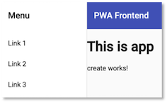

Frontend¶
Um die Dateneingabe zu vereinfachen, erstellen wir uns ein einfaches Frontend mithilfe von Angular. Wie beim Backend auch, erstellen wir dieses Frontend Schritt für Schritt von Beginn an.
Angular ist ein modernes JavaScript-Framework zur Entwicklung moderner Weboberflächen. Es gehört neben React.js und Vue.js zu den meisteverwendeten Frameworks für die Entwicklung sogenannter Single-Page-Applikationen. Um einfacher mit Angular zu entwickeln zu können, benötigen wir das Angular-Command-Line-Interface (CLI). Dieses installieren wir mithilfe des Paketmanagers npm. Geben Sie dazu ins Terminal
npm install -g @angular/cli
ein. Sie können prüfen, ob die Installation erfolgreich war, indem Sie in das Terminal
ng --version
eingeben. Es sollte etwas in der Art ausgeben:
_ _ ____ _ ___
/ \ _ __ __ _ _ _| | __ _ _ __ / ___| | |_ _|
/ △ \ | '_ \ / _` | | | | |/ _` | '__| | | | | | |
/ ___ \| | | | (_| | |_| | | (_| | | | |___| |___ | |
/_/ \_\_| |_|\__, |\__,_|_|\__,_|_| \____|_____|___|
|___/
Angular CLI: 11.0.1
Node: 14.15.0
OS: darwin x64
Angular:
...
Ivy Workspace:
Package Version
------------------------------------------------------
@angular-devkit/architect 0.1100.1 (cli-only)
@angular-devkit/core 11.0.1 (cli-only)
@angular-devkit/schematics 11.0.1 (cli-only)
@schematics/angular 11.0.1 (cli-only)
@schematics/update 0.1100.1 (cli-only)
Projekt erstellen - ng new¶
Um ein Angular-Projekt zu erstellen, wird der Befehl ng new <projekt> verwenden. Wir nennen das Projekt frontend und geben deshalb
ng new frontend
ins Terminal ein.
- Die Frage nach
stricter type checkingbeantworten wir mitN, alsoEnter. Das macht unser Leben etwas leichter. Fortgeschrittene Angular-Programmiererinnen können aber auch gerne mityantworten. (Die neue Angular CLI-Version 12 fragt danach nicht mehr, sondern verwendet das strikte Typesetting einfach, das macht es an einigen Stellen etwas komplizierter). - Die Frage nach
routingbeantworten wir mity, d.h. hier wählen wir nicht die Standardantwort!Routingerläutern wir gleich noch. - Bei den Stylesheets entscheiden wir uns für
CSS, können also einfach mitEnterbestätigen.
Jetzt sollte das Projekt eigentlich fehlerfrei erstellt worden sein. Aktuell wirft die Angular CLi jedoch einen Fehler, der vielleicht bei einigen von Ihnen auch auftritt Stackoverflow:
⠹ Installing packages (npm)...npm ERR! code ERESOLVE
npm ERR! ERESOLVE unable to resolve dependency tree
npm ERR!
npm ERR! While resolving: frontend@0.0.0
npm ERR! Found: jasmine-core@3.6.0
npm ERR! node_modules/jasmine-core
npm ERR! dev jasmine-core@"~3.6.0" from the root project
npm ERR!
npm ERR! Could not resolve dependency:
npm ERR! peer jasmine-core@">=3.7.1" from karma-jasmine-html-reporter@1.6.0
npm ERR! node_modules/karma-jasmine-html-reporter
npm ERR! dev karma-jasmine-html-reporter@"^1.5.0" from the root project
npm ERR!
npm ERR! Fix the upstream dependency conflict, or retry
npm ERR! this command with --force, or --legacy-peer-deps
npm ERR! to accept an incorrect (and potentially broken) dependency resolution.
npm ERR!
npm ERR! See /Users/jornfreiheit/.npm/eresolve-report.txt for a full report.
npm ERR! A complete log of this run can be found in:
npm ERR! /Users/jornfreiheit/.npm/_logs/2021-05-28T06_28_54_229Z-debug.log
✖ Package install failed, see above.
The Schematic workflow failed. See above.
In dem oben gezeigten Stackoverflow-Post wird vorgeschlagen, in der package.json die Versionsnummern für
"jasmine-core"von3.6.0auf3.7.1und für"karma-jasmine-html-reporter"von1.5.0auf1.6.0zu ändern und dann
npm install
package.json sieht dann also so aus:
1 2 3 4 5 6 7 8 9 10 11 12 13 14 15 16 17 18 19 20 21 22 23 24 25 26 27 28 29 30 31 32 33 34 35 36 37 38 39 40 41 42 43 44 45 | |
Die Anweisung npm install im Projekte-Ordner führt dazu, dass alle Abhängigkeiten, die in der Datei package.json
definiert sind, geladen und das node_modules-Verzeichnis erstellt. Siehe z.B. hier. Sollten Sie aufgefordert werden, npm audit fix oder npm audit fix --force auszuführen, weil es noch high vulnerabilities gibt, dann führen Sie einfach
npm audit fix --force
npm install --legacy-peer-deps
versuchen. Danach geben Sie
ng serve
ein. Es werden die entsprechenden TypeScript-Dateien compiliert und es erscheint am Ende eine Ausgabe, wie z.B.
⠋ Generating browser application bundles...****************************************************************************************
This is a simple server for use in testing or debugging Angular applications locally.
It hasn't been reviewed for security issues.
DON'T USE IT FOR PRODUCTION!
****************************************************************************************
Compiling @angular/core : es2015 as esm2015
Compiling @angular/common : es2015 as esm2015
Compiling @angular/platform-browser : es2015 as esm2015
Compiling @angular/router : es2015 as esm2015
Compiling @angular/platform-browser-dynamic : es2015 as esm2015
✔ Browser application bundle generation complete.
Initial Chunk Files | Names | Size
main.js | main | 362.07 kB
polyfills.js | polyfills | 44.15 kB
runtime.js | runtime | 1.09 kB
styles.css | styles | 0 bytes
| Initial Total | 407.31 kB
Build at: 2021-05-28T12:19:12.354Z - Hash: b1611690e9f20b1506e4 - Time: 28973ms
** Angular Live Development Server is listening on localhost:4200, open your browser on http://localhost:4200/ **
✔ Compiled successfully.
✔ Browser application bundle generation complete.
4 unchanged chunks
Build at: 2021-05-28T12:19:13.393Z - Hash: 52a9999d2b3b3c4923f4 - Time: 643ms
✔ Compiled successfully.
ng serve ausgeführt haben, wird im Browser automatisch auf die Änderungen reagiert. Sie müssen also nicht jedes Mal neu ng serve eingeben, bzw. nicht jedes Mal neu auf das grüne Dreieck in Ihrer IDE klicken: 
Öffnen Sie Ihren Browser und geben Sie als URL
http://localhost:4200
ein. Folgende Seite sollte erscheinen:

Öffnen Sie das Projekt in einer IDE. Die Projektstruktur ist wie folgt:
README.md
angular.json
e2e
karma.conf.js
node_modules
package-lock.json
package.json
src
|-- app
| |-- app-routing.module.ts
| |-- app.component.css
| |-- app.component.html
| |-- app.component.spec.ts
| |-- app.component.ts
| |-- app.module.ts
|
|-- assets
|-- environments
|-- favicon.ico
|-- index.html
|-- main.ts
|-- polyfills.ts
|-- styles.css
|-- test.ts
tsconfig.app.json
tsconfig.json
tsconfig.spec.json
tslint.json
- Die meiste Arbeit wird im
src-Ordner erledigt. Darin befindet sich (wird sich befinden) der Code unserer Anwendung. - Darin der wichtigste Ordner ist der
app-Ordner. Hier werden wir unsere Module, Komponenten und Services hinzufügen. - In dem
assets-Ordner werden Bilder, Icons und Daten abgelegt. - Der
node_modules-Ordner enthält alle benötigten 3rd-party-libraries. Welche das sind, wird in der Dateipackage.jsonals dependencies definiert. Mithilfe des Befehlsnpm installwerden alle benötigten Module dem Ordnernode_moduleshinzugefügt. - Der Ordner
environmentsenthält die notwendigen Konfigurationsinformationen für den development- und den production-Modus. Wir entwickeln zunächst im development-Modus. favicon.icoist das Favicon - ein kleines Icon, das im Reiter erscheint. Wählen Sie am besten ein eigenes.index.htmlist die Hauptseite. Mithilfe von Angular entwickeln wir eine Single Page Application, d.h. es wird eine einzige HTML-Seite geladen (index.html) und jeder weitere Inhalt wird asynchron hinzugefügt.styles.cssenthält die globalen Stylesheets, d.h. die CSS-Eigenschaften, die für das gesamte Projekt gelten sollen.- Die
app.component.*-Dateien beschreiben die app-Komponente. Eine Komponente besteht aus einer HTML-, einer CSS- und einer TypeScript-Datei (auch noch eine*.spec.ts, aber die interessiert zunächst nicht).
Öffnen Sie in Ihrer IDE die Datei app.component.html. Löschen
Sie den kompletten Inhalt und lassen nur noch
<router-outlet></router-outlet>.
Fügen Sie oberhalb von <router-outlet></router-outlet>
die Zeile <h1>This is app</h1> ein. Gehen Sie wieder zum
Browser und schauen sich den geöffneten Tab mit der URL localhost:4200 an.
Es erscheint der folgende Inhalt:

Single Page Application¶
Angular ist, wie bereits erwähnt, ein Framework zur Erstellung einer Single Page Application (SPA). Das bedeutet, dass die gesamte Anwendung aus einer einzigen HTML-Datei besteht, der src/index.html-Datei und dass in diese Datei Inhalte asynchron eingespeist werden. Dieses Einspeisen erfolgt durch JavaScript. Die hier geladene Seite ist die index.html, die in unserem Projekte-Ordner frontend liegt. Sie sieht so aus:
<!doctype html>
<html lang="en">
<head>
<meta charset="utf-8">
<title>Frontend</title>
<base href="/">
<meta name="viewport" content="width=device-width, initial-scale=1">
<link rel="icon" type="image/x-icon" href="favicon.ico">
</head>
<body>
<app-root></app-root>
</body>
</html>
Das Element <app-root> ist dabei ein sogenannter Tag-Selektor (auch Element-Selektor oder Komponenten-Selektor). In Angular sind die einzelnen Inhalte, die eingespeist werden, Komponenten. Jede Anwendung hat eine Hauptkomponente - die sogenannte Root Component. Diese Hauptkomponente ist meistens die AppComponent. Eine Komponente hat eine in sich geschlossene Bedeutung, z.B. ein Formular für Dateneingabe, eine Liste aller Daten oder auch nur ein bestimmtes Element.
Eine Komponente besteht aus einer View (Template) und einer TypeScript-Klasse. Die AppComponent besteht z.B. aus der app.component.html (der View) und der app.component.ts (der TypeScript-Klasse). Die TypeScript-Klasse kümmert sich um die Verwaltung der Daten, die in der View dargestellt und/oder durch Eingaben erzeugt werden. Die TypeScript-Klasse beschreibt die Logik der Komponente. Die View ist der dargestellte Bereich der Komponente, also das, was man im Browser von der Komponente sieht.
Neben der *.html- und der *.ts-Datei einer Komponente gibt es auch noch die *.css-Datei (also z.B. app.component.css). Diese enthält CSS-Eigenschaften, die speziell für die Komponente gelten sollen.
Um eine Komponente der gesamten Anwendung als Komponente bekannt zu machen, wird der Decorator @Componentverwendet. Decoratoren erkennt man am führenden @-Zeichen. Sie werden verwendet, um Metadaten der Anwendung zu verwalten. Der typische Aufbau einer Komponente (hier AppComponent - app.component.ts):
@Component({
selector: 'app-root',
templateUrl: './app.component.html',
styleUrls: ['./app.component.css']
})
export class AppComponent {
title = 'book-app';
}
Der Selektor gibt an, dass überall dort, wo app-root als Elementselektor <app-root> </app-root> verwendet wird, das in app.component.html definerte Template eingesetzt wird. Angenommen, in app.component.html ist der HTML-Code:
<h1>This is app</h1>
definiert. Dann wird dieser Code als Inhalt in das HTML-Element <app-root> </app-root> eingesetzt:
<app-root>
<h1>This is app</h1>
</app-root>
Zu dem Komponentenselektor <router-outlet></router-outlet> kommen wir gleich noch. Der spielt beim Routing eine Rolle. Wir erzeugen uns zunächst eine Navigationskomponente mithilfe von Angular Material.
Angular Material und Schematics¶
Angular Material ist ein CSS- (und JavaScript)-Framework für eine Angular-Anwendung, ähnlich wie Bootstrap. Wir verwenden hier Angular Material und fügen es mit dem Befehl
ng add @angular/material
unserer Anwendung hinzu. Sie werden nach unterschiedlichen Farbkombinationen gefragt, da können Sie wählen, was Ihnen beliebt. Sie können auch alle Fragen einfach mit Enter beantworten und somit die Standardvorgaben übernehmen. Es erfolgt eine Ausgabe in der Art
ℹ Using package manager: npm
✔ Found compatible package version: @angular/material@12.0.2.
✔ Package information loaded.
The package @angular/material@12.0.2 will be installed and executed.
Would you like to proceed? Yes
✔ Package successfully installed.
? Choose a prebuilt theme name, or "custom" for a custom theme: Indigo/Pink [ Preview: https://material.angular.io?them
e=indigo-pink ]
? Set up global Angular Material typography styles? No
? Set up browser animations for Angular Material? Yes
UPDATE package.json (1262 bytes)
✔ Packages installed successfully.
UPDATE src/app/app.module.ts (502 bytes)
UPDATE angular.json (3715 bytes)
UPDATE src/index.html (553 bytes)
UPDATE src/styles.css (181 bytes)
Eine nützliche Sache bei Angular Material sind Schematics. Das sind vordefinierte Komponenten, die wir verwenden können. Wir wählen zunächst die Navigations-Komponente, d.h. wir erstellen mithilfe des Navigations-Schmeas eine neue Komponente nav mit dem folgenden Befehl:
ng generate @angular/material:navigation nav
in dem Projektordner erscheint im /src/app-Ordner eine neuer Ordner nav, der die Dateien
nav.component.css,nav.component.html,nav.component.spec.ts, undnav.component.ts.
enthält. Es wurde also eine neue Angular-Komponente erzeugt. Wenn wir die nav.component.ts öffnen,
1 2 3 4 5 6 7 8 9 10 11 12 13 14 15 16 17 18 19 20 21 | |
dann sehen wir in Zeile 7, dass der Komponentenselektor dieser Komponente app-nav ist. Das heißt, wenn wir nun in app.component.html diesen Komponentenselektor einfügen, dann wird an diese Stelle die neue Komponente eingefügt:
1 2 3 | |
Wenn man nun im Browser (nach ng server - falls noch nicht geschehen) http://localhost:4200/ eingibt, dann sieht man die Navigationskomponente, aber nicht mehr die Überschrift <h1>This is app</h1> (und bei <router-outlet></router-outlet> ist derzeit eh noch nichts zu sehen). Wir nehmen diese beiden Zeilen aus der app.component.html heraus
1 | |
und fügen Sie in die nav.component.html ein:
1 2 3 4 5 6 7 8 9 10 11 12 13 14 15 16 17 18 19 20 21 22 23 24 25 26 27 28 29 | |
Neue Komponente und Routing¶
Wir erstellen nun eine weitere Komponente und binden diese über Routing ein. Die neue Komponente soll create heißen. Wir nutzen dazu den ng generate component <name-der-komponente>-Befehl, der auch abgekürzt ng g c <name-der-komponente> werden kann.
ng g c create
Es entsteht ein /src/app/create-Ordner, der die vier Dateien create.component.css, create.component.html, create.component.spec.ts und create.component.ts enthält. In diese Komponente wollen wir später ein Formular hinzufügen, mit dessen Hilfe wir neue Daten eingeben können.
Zunächst binden wir diese Komponente in unsere Anwendung ein. Dieses Mal erfolgt die Einbindung jedoch nicht statisch über den Komponentenselektor app-create, sondern dynamisch über eine Route. Das bedeutet, dass wenn die Route http://localhost:4200/create in den Browser eingegeben wird, dann soll an die Stelle des dynamischen Komponenetenselektors <router-outlet></router-outlet> die CreateComponent eingebunden werden. dazu müssen wir die Route in der app-routing.module.ts definieren:
1 2 3 4 5 6 7 8 9 10 11 12 13 | |
Dazu wird in dem Routes-Array (Zeilen 5-7) die neue Route definiert, indem der path angegeben wird (create) und welche Komponente für diesen Pfad aufgerufen werden soll (CreateComponent). Diese Komponente wird dazu in die app-routing.module.ts importiert (Zeile 3).
Wenn wir nun in den Browser http://localhost:4200/create eingeben, dann wird diese Komponente in den <routing-outlet>-Selektor eingefügt (also unterhalb der Überschrift <h1>This is app</h1>). Es erscheint

, da die View der CreateComponent derzeit nur aus dem Absatz <p>create works!</p> besteht (siehe create.component.html).
Um diese Route auch über das Navigationsmenü aufrufen zu können, ändern wir unsere nav.component.html:
1 2 3 4 5 6 7 8 9 10 11 12 13 14 15 16 17 18 19 20 21 22 23 24 25 26 27 28 29 | |
Routen werden also nicht über href, sondern über routerLink aufgerufen (siehe hier). Das Attribut routerLinkActive erlaubt, CSS-Klassen für "aktive", also klickbare Links hinzuzufügen (siehe hier). Weitere Details zum Routing in Angular finden Sie z.B. hier.
Ein Formular erstellen¶
Die Erstellung eines Formulars besteht in Angular aus zwei Teilschritten:
- Es wird in der
.ts-Klasse eineFormGrouperstellt, die mehrereFormControl-Elemente enthält.FromGroupentspricht dem Formular undFormControlkann z.B. eine Eingabefeld in diesem Formular sein. Bei der Erstellung einerFormGrouphilft derFormBuilder. - Es wird in der
.html-Datei das Formular angelegt, wobei dem Formular und den einzelnen Eingabefeldern die CSS-Klassen des Frameworks zugeordnet werden, das verwendet wird (hier alsoMaterial).
Bevor uns diese Schritte genauer anschauen, erledigen wir erst eine Sache, die häufig vergessen wird. Bei dem Formular, das wir erstellen, handelt es sich um eine reactive form. Wir müssen dazu das RactiveFormsModule in die app.module.ts einfügen (ob FormsModule auch, weiß ich immer nicht genau, aber es schadet nichts).
1 2 3 4 5 6 7 8 9 10 11 12 13 14 15 16 17 18 19 20 21 22 23 24 25 26 27 28 29 30 31 32 33 34 35 36 37 38 | |
Wir schauen uns zunächst den ersten Schritt anhand der create.component.ts an. Diese ist nach Erstellung noch "leer":
1 2 3 4 5 6 7 8 9 10 11 12 13 14 15 | |
Nachdem wir das Formular hinzugefügt haben, hat die create.component.ts folgendes Aussehen:
1 2 3 4 5 6 7 8 9 10 11 12 13 14 15 16 17 18 19 20 21 22 23 24 25 26 27 28 29 30 31 32 33 34 35 36 | |
- In zeile
2werden die benötigten Klassen importiert. - Der Klasse wird per dependency injection der
FormBuilderhinzugefügt (Zeile12). - Die eigentliche
FormGroup(hier namensformGroup) wird in den Zeilen17-20mithilfe desFormBuilderund dessengroup()-Funktion erstellt. Dabei werden jedemFormControl-Element zunächst keinvalue(''), aber einValidatorhinzugefügt, der dafür verantwortlich ist, zu erkennen, ob das Feld (korrekt) ausgefüllt wurde. - Die
get()-Funktionen für die einzelnenFormControl-Elemente ermöglichen den Zugriff auf diese.
Nun erstellen wir das Formular in der create.component.html-Datei:
1 2 3 4 5 6 7 8 9 10 11 12 13 14 15 16 17 18 19 20 21 22 23 24 25 26 27 28 29 30 31 32 33 34 35 | |
Wir haben zunächst drei Eingabefelder, alle drei jeweils auch mit einem Label. Wir erhalten jedoch noch einige Fehler, da die passenden Module noch nicht in der app.module.ts importiert sind, z.B. MatFormField. Das müssen wir zunächst nachholen:
1 2 3 4 5 6 7 8 9 10 11 12 13 14 15 16 17 18 19 20 21 22 23 24 25 26 27 28 29 30 31 32 33 34 35 36 37 38 39 40 41 42 43 | |
Jetzt sollte es in unserer create.component.html nur noch einen Fehler geben, nämlich die onSubmit()-Funktion ist noch nicht implementiert. Wir fügen eine erste simple Implementierung der create.component.ts hinzu:
1 2 3 4 5 6 7 8 9 10 11 12 13 14 15 16 17 18 19 20 21 22 23 24 25 26 27 28 29 30 31 32 33 34 35 36 37 38 39 40 41 42 43 44 45 | |
Die drei Werte der Eingabefelder werden ausgelesen und einem JavaScript-Objekt post hinzugefügt. Dieses wird auf der Konsole ausgegeben.
Sollte es in Ihrer create.component.html-Datei nun immer noch Fehler geben, dann liegt es daran, dass bei diesen Zugriffen inp_image.errors.required (3x für alle 3 FormControl-Elemente) das strikte Typesetting sagt, dass inp_image.errors eventuell null sein könnte und man dann gar nicht auf die Eigenschaft required zugreifen könnte. Dafür können Sie den ?-Operator verwenden, das sieht dann so aus:
<span *ngIf="inp_title.errors?.required">This field is mandatory.</span>
<span *ngIf="inp_location.errors?.required">This field is mandatory.</span>
<span *ngIf="inp_image.errors?.required">This field is mandatory.</span>
Das Formular ist für title und location bereits passend für die Eingabe eines post-Datensatzes. Allerdings wollen wir für das image ja eine Bilddatei hochladen, die dann in das base64-Format umgewandelt werden soll. Dazu müssen wir das image-Eingabefeld ändern. Leider stellt Material nicht direkt ein File upload-Eingabeelement zur Verfügung. Das folgende Vorgehen wurde deshalb hier entnommen und angepasst.
Die create.component.html sieht nun so aus:
1 2 3 4 5 6 7 8 9 10 11 12 13 14 15 16 17 18 19 20 21 22 23 24 25 26 27 28 29 30 31 32 33 34 35 | |
In der create.component.ts fügen wir die uploadFileEvt()-Funktion hinzu, der das change-Event übergeben wird. Dieses Objekt enthält für den input type="file" unter der target-Eigenschaft ein files-Array, in dem alle ausgewählten Dateien enthalten sind. Die erste Implementierung liest diesen Wert aus:
1 2 3 4 5 6 7 8 9 10 11 12 13 14 15 16 17 18 19 20 21 22 23 24 25 26 27 28 29 30 31 32 33 34 35 36 37 38 39 40 41 42 43 44 45 46 47 48 49 50 51 52 53 | |
Sollte es in Ihrer create.component.ts-Datei nun immer noch Fehler geben, dann liegt es daran, dass formGroup: FormGroup; nur deklariert, nicht jedoch auch initialisiert wird (striktes Typesetting). Das können Sie einfach umgehen, indem Sie sagen, dass Sie sich aber ganz sicher sind, dass es beim Initialisieren der Komponente initialisiert wird. Dazu fügt man ein ! hinter den Variablennamen ein:
formGroup!: FormGroup;
Wir erweitern diese Funktion nun noch um das Auslesen der Datei in einen FileReader. Damit können in Webanwendungen Dateien eingelesen werden. Das onload-Ereignis wird ausgelöst, wenn die Inhalte der Dateien verfügbar sind, wenn die Datei also eingelesen wurde. Dieser Inhalt wird in ein Image-Objekt umgewandelt, da für ein Image die Quelle des Bildes das base64-Format ist.
48 49 50 51 52 53 54 55 56 57 58 59 60 61 62 63 64 65 66 67 68 | |
Dieser imgBase64Path beginnt jedoch stets mit data:image/png;base64. Diesen Substring wollen wir entfernen, da er nicht zu den eigentlichen Bilddaten gehört (die in der Datenbank gespeichert werden). Der Aufbau dieses imgBase64Path-Strings ist wie folgt:
data:image/png;base64 , Bilddaten
also der genannte Teilstring, gefolgt von Komma, gefolgt von den Bilddaten. In Zeile 61 wird deshalb der Teilstring extrahiert, der hinter dem ersten Komma beginnt - somit alle Bilddaten. Diese werden gespeichert. In der onSubmit()-Funktion nutzen wir als Wert der Eigenschaft image bereits diesen verbleibenden String. Das post-Objekt ist somit vollständig.
Das Formular in der create.component.html-Datei wurde noch mit einigen eigenen CSS-Klassen versehen. Die Definitionen dieser Klassen sind hier:
1 2 3 4 5 6 7 8 9 10 11 12 13 14 15 16 17 18 19 20 21 22 23 24 25 26 27 | |
Das Frontend mit dem Backend verbinden¶
Um das Frontend mit dem Backend zu verknüpfen, erstellen wir uns einen Service. Ein Service in Angular ist eine TypeScript-Klasse, die einen bestimmten Zweck erfüllt und typischerweise allen Komponenten zur Verfügung steht. Zu einem Service gehört also keine View. In Angular wird ein Service mittels ng generate service <name-des-services> erstellt - kurz ng g s <name-des-services>. Wir nennen unseren Service backend:
ng g s backend
Es entsteht eine Datei backend.service.ts:
1 2 3 4 5 6 7 8 9 | |
In diesem Service verwenden wir zwei Angular-Module, um mittels HTTP auf das Backend zuzugreifen: das Modul HttpClient für die HTTP-Anfragen und das Modul HttpHeaders, um die HTTP-headers zu konfigurieren. Wir wollen an dieser Stelle nur die Funktion implementieren, mit der wir einen neuen Datensatz an das Backend übertragen und dabei den Endpunkt http://localhost:3000/posts mittels einer POST-Anfrage ansprechen.
Diese Implementierung sieht wie folgt aus:
1 2 3 4 5 6 7 8 9 10 11 12 13 14 15 16 17 18 19 20 21 22 23 24 | |
Der HttpClient bietet Funktionalitäten für die Verwendung des HTTP-Protokolls in Angular. Wir verwenden hier die post-Funktion. Darin übergeben wir die URL des Backends udn den Datensatz post. In den headers konfigurieren wir noch, dass wir ein JSON übergeben und auch ein JSON zurückerwarten. Wir verwenden hier einen Typen Post, der noch nicht existiert. Wir fügen dazu ein Interface in unseren Service ein (könnte auch in einer extra Datei sein), in dem wir die Struktur eines Post-Objektes definieren (entspricht der Struktur, die wir auch in der Datenbank dafür verwendet haben).
1 2 3 4 5 6 7 8 9 10 11 12 13 14 15 16 17 18 19 20 21 22 23 24 25 26 27 28 29 30 31 | |
Nun können wir diesen Service in unseren Komponenten verwenden. Dazu binden wir ihn per dependency injection in die create.component.ts ein und rufen dort in der onSubmit()-Funktion die Funktion addPost() auf:
1 2 3 4 5 6 7 8 9 10 11 12 13 14 15 16 17 18 19 20 21 22 23 24 25 26 27 28 29 30 31 32 33 34 35 36 37 38 39 40 41 42 43 44 45 46 47 48 49 50 51 52 53 54 55 56 57 58 59 60 61 62 63 64 65 66 67 68 69 70 71 72 73 | |
Wichtig ist, dass wir nicht vergessen dürfen, das HttpClientModule in der app.module.ts zu importieren:
1 2 3 4 5 6 7 8 9 10 11 12 13 14 15 16 17 18 19 20 21 22 23 24 25 26 27 28 29 30 31 32 33 34 35 36 37 38 39 40 41 42 43 44 45 | |
Somit sollte unser Frontend fertig und an das Backend angebunden sein. Um es vollständig zu testen, starten wir das Backend! Geben Sie im Frontend (/create) Daten ein und schicken Sie das Formular ab. Die Datenbank sollte mit den neuen Daten befüllt sein - das können Sie unter phpmyadmin überprüfen.
Success
Wir haben uns zwar in Sachen Progressive Web Apps nicht wirklich weiterentwickelt, aber wir haben nun erstmal einige nützliche Hilfsmittel geschaffen, um eine "größere" Anwendung später progressive zu gestalten. Es gibt nun eine Datenbank, die Bilder speichern kann und das passende Backend zur Anbindung der Datenbank. Zur Erleichterung der Dateneingabe in die Datenbank haben wir uns auch ein Frontend erstellt.